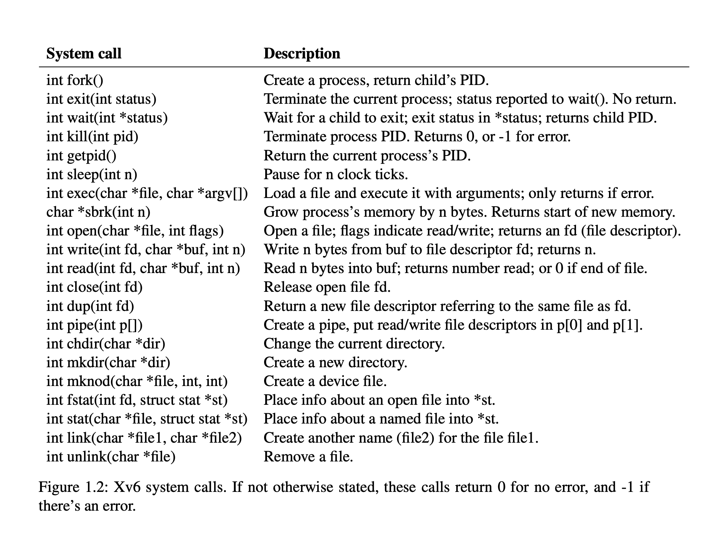

3. System call
- user.h

- syscall.h
| System call | System call number |
|---|---|
| fork | 1 |
| exit | 2 |
| wait | 3 |
| pipe | 4 |
| read | 5 |
| kill | 6 |
| exec | 7 |
| fstat | 8 |
| chdir | 9 |
| dup | 10 |
| getpid | 11 |
| sbrk | 12 |
| sleep | 13 |
| uptime | 14 |
| open | 15 |
| write | 16 |
| mknod | 17 |
| unlink | 18 |
| link | 19 |
| mkdir | 20 |
| close | 21 |
- syscall.c
// Prototypes for the functions that handle system calls.
extern uint64 sys_func(void);
...
static uint64 (*syscalls[])(void) = {
[SYS_fork] sys_fork,
...
};
void syscall(void) {
int num;
struct proc *p = myproc();
num = p->trapframe->a7;
...
}
4. Kernel (Supervisor) mode
- usertrapret (trap.c): Sets up the RISC-V control registers to prepare for a future trap from user space. (ecall 的逆操作)
- 关中断
intr_off(); - 更新
stvec指向用户空间的 trap 处理代码, 设置了stvec指向 trampoline, 在那里执行sret返回到 user address space - 填入 trapframe 内容 (恢复现场)
- 存储 kernel page table pointer (
kernel_satp) - 存储当前用户进程的 kernel stack (
kernel_sp, stack pointer) - 存储 usertrap 函数指针, 使得 trampoline 代码能够跳转到 (
kernel_trap = usertrap) - 从
tp中读取当前的CPU核编号 (kernel_hartid), 存储在 trapframe 中, 使得 trampoline 代码能够恢复这个数字, 因为用户代码可能会修改它
- 存储 kernel page table pointer (
- 关中断
- userret (trampoline.S): Switches satp to the process’s user page table. kernel 中最后一条指令
- 程序切换回 user mode
$sepc的数值会被 copy 到pc- sret 重新打开中断